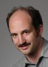

|
EECS graduate student Xuening Sun, whose advisor is Prof. Alberto Sangiovanni-Vincentelli, has been named a winner of the UC Berkeley Mayfield Fellowship,
a year-long program designed to bring together graduate students from
the Haas Business School, College of Engineering, and School of
Information Management. The program provides a broad entrepreneurship
experience by combining ongoing mentoring with faculty, company
executives, venture capitalists and Silicon Valley networking
activities. Fellows further have an opportunity to travel and study
entrepreneurship in Asia in the summer.
October 14

Research on automated collision avoidance algorithms that can be
used for civilian aircraft in the air traffic control system by Claire Tomlin
and her team is featured in a National Science Foundation (NSF) online
magazine article and video titled, “Unmanned Helicopters Could Help Air
Traffic Controllers”. They have developed “quadrotors”, about two feet
by two feet, snap together like Legos and look more like toys than
airliners. But, the technology the quadrotors are used to test could
translate to systems that better protect the flying public.
More>>
October 13
Connie Chang-Hasnain has been awarded the Humboldt Research Award
from the Alexander von Humboldt Foundation. The award is granted in
recognition of a researcher's entire achievements to date to academics
whose fundamental discoveries, new theories, or insights have had a
significant impact on their own discipline and who are expected to
continue producing cutting-edge achievements in future.
More>>
October 13

Eric Brewer has won the ACM SIGOPS Mark Weiser Award,
the highest award in operating systems. This award is given to an
individual who has demonstrated creativity and innovation in operating
systems research based on "contributions that are highly creative,
innovative, and possibly high-risk, in keeping with the visionary
spirit of Mark Weiser".
October 13
EECS Prof. Emeritus Larry Rowe is the 2009 winner of the prestigious ACM
Special Interest Group on Multimedia (SIGMM) award for Outstanding
Technical Contributions to Multimedia Computing, Communications and
Applications. This award, given in recognition of outstanding
contributions over a researcher's career, cited Prof. Rowe's
"pioneering research in continuous media software systems and visionary
leadership of the multimedia research community."
October 12
EECS graduate student, Changhwan Shin, who is advised by Professors
Tsu-Jae King Liu and Bora Nikolic, won both the Best Paper Award and
the Best Student Paper award at the 2009 IEEE International SOI Conference, for the paper entitled "SRAM Yield Enhancement with thin-BOX FD-SOI."
October 9
Alberto L. Sangiovanni-Vincentelli
is to receive an Honorary Doctorate from the University of Aalborg in
Denmark on November 2nd. This is right after Prof.
Sangiovanni-Vincentelli received the Maxwell and Newton awards.
September 25

Maneesh Agrawala has been named a MacArthur fellow,
one of 24 recipients chosen nationwide for the annual award. This award
comes with a $500,000 grant from the John D. and Catherine T. MacArthur
Foundation of Chicago. Fellows can use the money any way they want over
the next five years. Prof. Agrawala develops visual methods to help
people more easily sort through information. As a graduate student, he
created an automated program that creates easy-to-decipher route maps
that make it clear where to turn and which road to take. Later, he
developed a system that creates simple assembly instructions - with
three-dimensional views - for such things as furniture and toys. He
said he may use the grant to explore how radio journalists use words
and sound to produce rich, descriptive and compelling stories.
UCB Newscenter
SF Gate
September 22
Dan Klein has won the Okawa Foundation Research Grant
for 2009. The Okawa Foundation for Information and Telecommunications
was established in 1986, and every year awards this research grant to a
select few for their accomplishments and promise in this area. This
prestigious award comes with a $10,000 research gift.
September 16
|